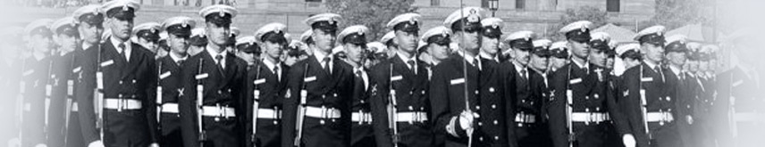

INDIAN NAVY


THE MILITARY ROLE

The essence of all navies is their military character. In fact,
the Raison d’etre of navies is to ensure that no hostile maritime
power can degrade own national security and interests. The navy's military
role is characterized by the threat or use of force at and from the sea. This includes
application of maritime power in both offensive operations against enemy forces territory
and trade, and defensive operations to
protect own forces, territory and trade. The military role is performed through the
accomplishment of specific military objectives, missions and tasks.
OBJECTIVES
> Deterrence against war or intervention
> Decisive military victory in case of war
> Security of India's territorial integrity, citizens and off-shore assets from sea-borne threat
> Influence affairs on land
> Safeguard India's mercantile marine and marine and maritime trade
> Safeguard India's national interests and maritime security
MISSONS
> Nuclear second strike
> MDA
> Sea Control
> Sea Denial
> Blockade
> Power Projection
> Expeditionary Ops
> Compellance
> Destruction
> SLOC Interdiction
> SLOC Protection
> Special Ops
> Protection of offshore Assets
> Seaward Defense
> NCAGS Ops
TASKS
> Surveillance
> Maritime Strike
> Anti-submarine Ops
> Anti-Surface Ops
> Anti-Air Ops
> Amphibious Ops
> Information Ops
> Electronic Warfare
> Special Ops
> Mine Warfare
> VBSS
> Harbour Defense
Copyright 2018
This Page is desighned by Amit Geed